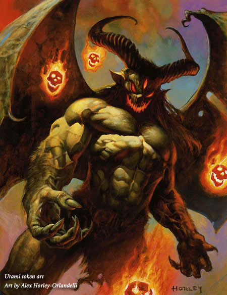
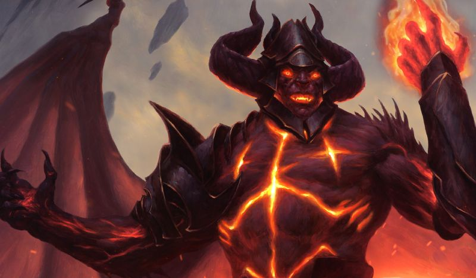
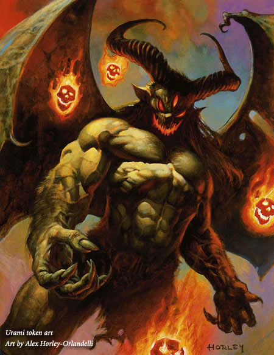
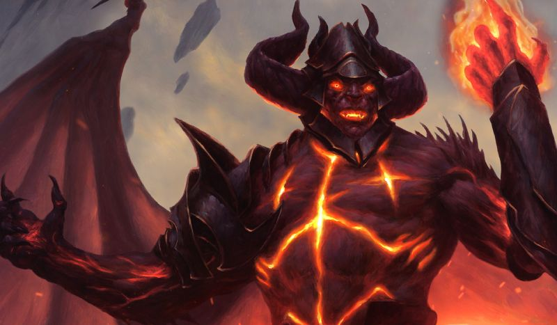

The Demonology Storyline

 



Belzenlok, the War of the Abyss
Belzenlok fought in something called "The War of the Abyss", and had been stuck in the Abyss ever since.
The Cabal of Dominaria, desperate for leadership after the demise of The First, performed a ritual to summon Kuberr, but accidentally freed Belzenlok from the Abyss.
As part of the Cabal, the Demonlord began the process of rewriting history with himself as the lead.
Claiming Yawgmoth's title of Lord of the Wastes and Dakkon Blackblade's accomplishments of forging the Blackblade and killing the Elder Dragon Piru.
He was also known as the Evincar of the Stronghold, King of Urborg, Scion of Darkness, Doom of Fools, Master of the Ebon Hand, and the Eternal Patriarch of the Cabal.
After subjugating much of Dominaria beneath his rule, he was ultimately killed in a strike against the Cabal Stronghold by the skyship Weatherlight and its crew.
The Planeswalker Gideon Jura infiltrated the Stronghold and seized control of the Blackblade, and in the ensuing battle.
Liliana Vess used the legendary sword to slay Belzenlok and end his reign.
Urami, the Oni of Insatiable Hunger
Urami disliked the uncorporeal food provided by the Kakuriyo.
He turned his wathering mouth to the corporeal realm of Kamigawa.
In order to create a constant supply of tangible food, Urami struck a deal with a group of ogre-magi.